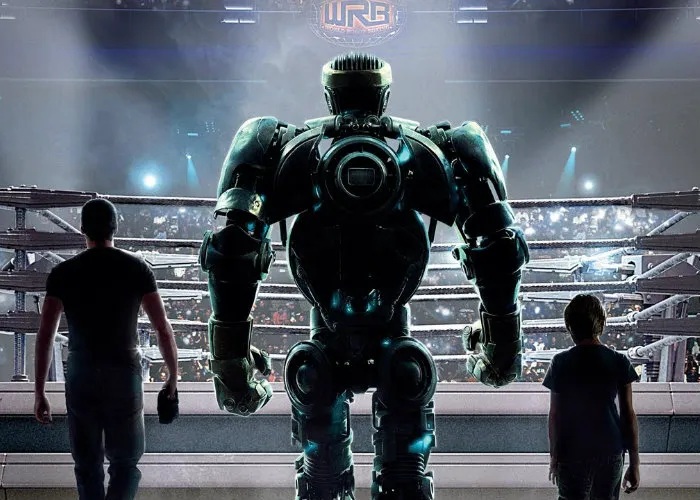

Trailer
Elenco
Hugh Jackman
Charlie Kenton, um pugilista decadente que se tornou um insignificante promotor de lutas, GIGANTES DE AÇO é uma eletrizante história de ação. Quando Charlie chega ao fundo do poço, ele reluta em formar uma equipe com seu filho Max (Dakota Goyo) para construir e treinar um lutador para o campeonato.
Evangeline Lilly
Bailey, filha do antigo técnico de Charlie. A atriz encontrou muito sucesso nas telonas, sendo Gigantes de Aço seu primeiro blockbuster.
Dakota Goyo
Max Kenton, filho de Charlie e grande entusiasta das lutas entre robôs. Carismático e fofo, o garotinho conquistou até o coração de pedra de seu pai, que só queria catar uma grana às custas dele e sumir.
Deixe sua opinião
Galeria de Imagens
